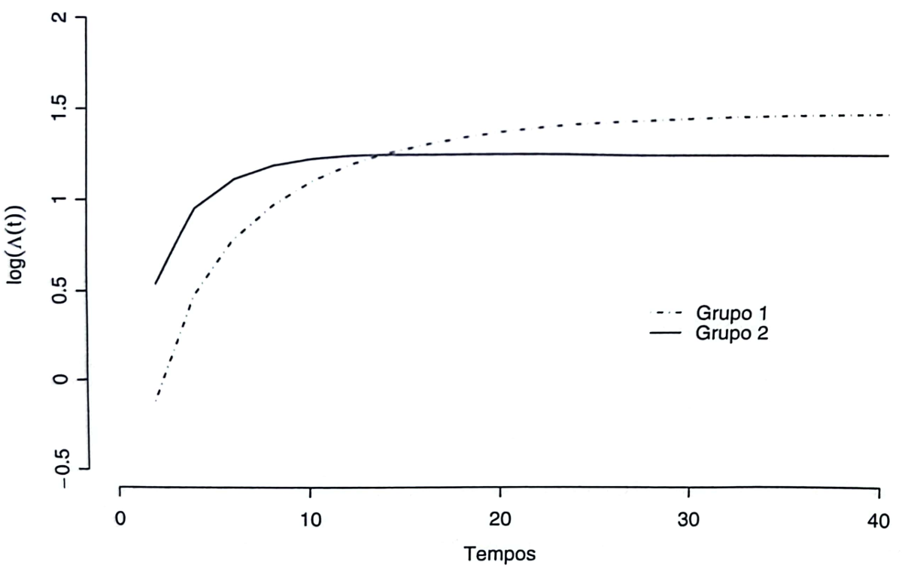

ANÁLISE DE SOBREVIVÊNCIA E CONFIABILIDADE
MODELO DE REGRESSÃO DE COX
Universidade Federal Fluminense
INTRODUÇÃO
ONDE ESTAMOS
- Até aqui, estudamos modelos de regressão paramétricos para dados de sobrevivência e confiabilidade.
- Utilizamos distribuições como:
- Exponencial;
- Weibull;
- Log-normal;
- Gama;
- Gama Generalizada.
- Em todos os casos, foi necessário especificar uma distribuição probabilística para os tempos observados.
- Os efeitos das covariáveis foram incorporados por meio dos parâmetros desses modelos.
O QUE APRENDEMOS COM OS MODELOS PARAMÉTRICOS?
- Os modelos paramétricos permitem:
- Estimar efeitos de covariáveis;
- Obter curvas de sobrevivência ajustadas;
- Comparar grupos;
- Fazer previsões;
- Estimar probabilidades de sobrevivência em diferentes horizontes de tempo.
- Quando a distribuição é adequada, esses modelos costumam produzir excelentes resultados.
UMA QUESTÃO FUNDAMENTAL
- Considere um estudo sobre pacientes com câncer.
- Nosso interesse é responder perguntas como:
- A idade afeta a sobrevivência?
- O tratamento A é superior ao tratamento B?
- O estágio da doença influencia o prognóstico?
- Determinado biomarcador está associado ao risco de morte?
- Precisamos realmente conhecer a distribuição dos tempos de sobrevivência para responder essas perguntas?
O DESAFIO DOS MODELOS PARAMÉTRICOS
- Os modelos paramétricos exigem uma hipótese importante:
- A distribuição dos tempos deve ser especificada previamente.
- A qualidade das inferências depende diretamente dessa escolha:
- Exponencial
- Weibull
- LogNormal
- Gama
- Gama Generalizada
E SE A DISTRIBUIÇÃO ESTIVER ERRADA?
- Suponha que os tempos de sobrevivência possuam uma distribuição complexa e desconhecida.
- Mas o pesquisador ajusta um modelo Weibull.
- Possíveis consequências:
- estimativas viesadas;
- erros-padrão incorretos;
- intervalos de confiança inadequados;
- interpretações equivocadas.
- A modelagem passa a depender fortemente da distribuição escolhida.
O QUE NORMALMENTE INTERESSA AO PESQUISADOR?
- Na prática, muitas vezes, o objetivo principal não é estimar:
- parâmetros de forma;
- parâmetros de escala;
- características da distribuição dos tempos.
- O interesse geralmente está em:
- comparar tratamentos;
- avaliar fatores prognósticos;
- identificar fatores de risco;
- quantificar efeitos de covariáveis.
UMA IDEIA REVOLUCIONÁRIA
- Em 1972, David Cox propôs uma abordagem inovadora.
- Modelar os efeitos das covariáveis sem precisar especificar completamente a distribuição dos tempos de sobrevivência.
- Essa proposta deu origem ao:
- Modelo de Riscos Proporcionais de Cox
- Ou, simplismente, Modelo de Cox.
A GRANDE SACADA DO MODELO DE COX
Nos modelos paramétricos: \[ f(t), \quad S(t) \quad \text{e} \quad \lambda(t) \] precisam de formas específicas.
No modelo de Cox:
- não assumimos Exponencial;
- não assumimos Weibull;
- não assumimos Log-normal;
- não assumimos Gama;
- não assumimos Gama Generalizada.
O QUE O MODELO PROCURA EXPLICAR?
- O foco deixa de ser a distribuição dos tempos.
- O foco passa a ser:
- Como as covariáveis modificam o risco de ocorrência do evento.
- Perguntas típicas:
- Quanto o risco aumenta com a idade?
- Qual o efeito do tratamento no risco?
- Quanto o tabagismo aumenta o risco?
- Como temperatura e pressão afetam o risco de falha de um equipamento?
POR QUE O MODELO DE COX SE TORNOU TÃO POPULAR?
- O modelo reúne características extremamente desejáveis:
- Flexibilidade;
- Poucas suposições distribucionais;
- Fácil interpretação dos efeitos;
- Aplicação em diferentes áreas;
- Excelente desempenho prático.
- Por isso, tornou-se o modelo mais utilizado na análise de sobrevivência/confiabilide.
O IMPACTO DE DAVID COX
- O artigo publicado por David Cox em 1972 é um dos trabalhos mais influentes da história da Estatística (aparece entre os três mais citados da história na área).
- Seu modelo revolucionou áreas como:
- Medicina e Epidemiologia;
- Saúde Pública;
- Confiabilidade;
- Economia e Ciências Sociais.
- Mais de 50 anos após sua publicação, continua sendo a principal ferramenta para análise de sobrevivência com covariáveis.
O QUE VAMOS APRENDER?
- Nesta aula estudaremos:
- Formulação do modelo de Cox;
- Conceito de riscos proporcionais;
- Razão de riscos (hazard ratio);
- Estimação por verossimilhança parcial;
- Interpretação dos coeficientes;
- Verificação da suposição de proporcionalidade
- Medidas de qualidade de ajuste;
O MODELO DE REGRESSÃO DE COX
UMA SITUAÇÃO SIMPLES
- Considere um estudo clínico randomizado com dois grupos:
- Grupo 0: tratamento padrão;
- Grupo 1: novo tratamento.
- Desejamos responder à seguinte pergunta:
O novo tratamento altera o risco de ocorrência do evento de interesse?
- Para compreender a estrutura do modelo de Cox, começaremos por este caso simples.
A IDEIA CENTRAL DOS RISCOS PROPORCIONAIS
- Denote por:
- \(\lambda_0(t)\): função de risco do grupo controle;
- \(\lambda_1(t)\): função de risco do grupo tratado.
- O modelo de Cox parte da hipótese de que \[ \frac{\lambda_1(t)}{\lambda_0(t)} = K \] para todo instante \(t\).
- Ou seja, a razão entre os riscos permanece constante ao longo do tempo.
O QUE ISSO SIGNIFICA NA PRÁTICA?
- A hipótese de riscos proporcionais não significa que os riscos sejam constantes.
- Os riscos podem:
- aumentar;
- diminuir;
- apresentar comportamentos complexos ao longo do tempo.
- O que permanece constante é apenas a proporção entre eles.
- Exemplo:
- Se o risco de um grupo for o dobro do outro hoje, continuará sendo o dobro amanhã, na próxima semana ou em qualquer outro instante do acompanhamento.
A RAZÃO DE RISCOS
- A constante \[ K=\frac{\lambda_1(t)}{\lambda_0(t)} \] é denominada Razão de Riscos (Hazard Ratio).
- Sua interpretação é simples:
- \(K=1\): riscos iguais;
- \(K>1\): maior risco no grupo 1;
- \(K<1\): menor risco no grupo 1.
- Grande parte da interpretação do modelo de Cox será baseada nessa quantidade.
INTRODUZINDO UMA COVARIÁVEL INDICADORA
- Defina a variável \[ x= \begin{cases} 0, & \text{grupo controle} \\ 1, & \text{grupo tratado} \end{cases} \] e represente a razão de riscos por \[ K=e^{\beta}. \]
- A utilização da função exponencial garante que a razão de riscos seja sempre positiva.
SURGE O MODELO DE COX
Substituindo \(K=e^\beta\), obtemos \[ \lambda(t|x) = \lambda_0(t)e^{\beta x}. \]
Esta é a forma mais simples do modelo de Cox.
Observe que:
- \(\lambda_0(t)\) descreve o comportamento do risco de base ao longo do tempo;
- \(e^{\beta x}\) incorpora o efeito do grupo.
INTERPRETAÇÃO DE \(\beta\)
Para o grupo controle (\(x=0\)), \[ \lambda(t|0)=\lambda_0(t). \]
Para o grupo tratado (\(x=1\)), \[ \lambda(t|1)=\lambda_0(t)e^\beta. \]
Logo, \[ \frac{\lambda(t|1)} {\lambda(t|0)} = e^\beta. \]
Portanto, \(e^\beta\) representa a razão de riscos entre os grupos.
INTERPRETAÇÃO DO HAZARD RATIO
- Assim:
- Se \(e^\beta=1\), não existe diferença entre os grupos.
- Se \(e^\beta=1.50\), o risco é 50% maior.
- Se \(e^\beta=2\), o risco é duas vezes maior.
- Se \(e^\beta=0.80\), o risco é 20% menor.
- Se \(e^\beta=0.50\), o risco é reduzido pela metade.
- Observe que a interpretação é feita sobre o risco, e não diretamente sobre o tempo de sobrevivência.
GENERALIZAÇÃO PARA MÚLTIPLAS COVARIÁVEIS
- Na prática, normalmente observamos diversas características dos indivíduos.
- Exemplos:
- idade;
- sexo;
- tratamento;
- biomarcadores;
- pressão arterial;
- temperatura de operação.
- Sejam \(\mathbf{x}=(x_1,x_2,\ldots,x_p)^T\) as covariáveis observadas.
FORMA GERAL DO MODELO DE COX
- A expressão geral do modelo é \[ \lambda(t|\mathbf{x}) = \lambda_0(t) e^{\boldsymbol{\beta}^T\mathbf{x}}. \] ou, equivalentemente, \[ \lambda(t|\mathbf{x}) = \lambda_0(t) e^{\beta_1x_1+\cdots+\beta_px_p}. \]
- O modelo é composto por um componente não paramétrico e um componente paramétrico.
O COMPONENTE NÃO PARAMÉTRICO
- A função \[ \lambda_0(t) \] é denominada função de risco basal.
- Ela representa o risco de um indivíduo para o qual \[
\mathbf{x}=\mathbf{0}.
\]
- Nenhuma forma específica é assumida para \(\lambda_0(t)\).
- Essa é a principal característica que diferencia o modelo de Cox dos modelos paramétricos.
O COMPONENTE PARAMÉTRICO
- O termo \(e^{\boldsymbol{\beta}^T\mathbf{x}}\) descreve o efeito das covariáveis.
- As quantidades \[ \beta_1,\beta_2,\ldots,\beta_p \] medem o impacto de cada variável explicativa sobre o risco.
- Além disso, \[ e^{\boldsymbol{\beta}^T\mathbf{x}}>0 \] para qualquer valor das covariáveis, garantindo que a função de risco seja sempre não negativa.
POR QUE NÃO EXISTE INTERCEPTO?
- Em modelos lineares escrevemos \[ \beta_0+\beta_1x_1+\cdots+\beta_px_p. \]
- No modelo de Cox não existe um intercepto explícito.
- O motivo é que a função basal \[ \lambda_0(t) \] já desempenha esse papel.
- Dizemos que o intercepto é absorvido pela função de risco basal.
FUNÇÕES ASSOCIADAS AO MODELO
- A partir do modelo de Cox, segue que \[ \Lambda(t|\mathbf{x}) = \Lambda_0(t) e^{\boldsymbol{\beta}^T\mathbf{x}} \textrm{ e } S(t|\mathbf{x}) = \exp \left[ -\Lambda_0(t) e^{\boldsymbol{\beta}^T\mathbf{x}} \right]. \]
- Equivalentemente, \[ S(t|\mathbf{x}) = S_0(t)^{e^{\boldsymbol{\beta}^T\mathbf{x}}}. \] em que:
- \(\Lambda_0(t)\) é a função basal de risco acumulado;
- \(S_0(t)\) é a função basal de sobrevivência.
A PROPRIEDADE MAIS IMPORTANTE DO MODELO
- Considere dois indivíduos com covariáveis \[ \mathbf{x}_A \quad\text{e}\quad \mathbf{x}_B. \]
- Temos \[ \frac{\lambda(t|\mathbf{x}_A)} {\lambda(t|\mathbf{x}_B)} = e^{\boldsymbol{\beta}^T(\mathbf{x}_A-\mathbf{x}_B)}. \]
- Observe que o tempo \(t\) desaparece da expressão (constante no tempo).
- Essa é a essência da hipótese de riscos proporcionais.
- A propriedade de proporcionalidade também vale para as funções de risco acumulado.
COMO IDENTIFICAR UMA VIOLAÇÃO DA HIPÓTESE?
- Se a razão entre os riscos muda ao longo do tempo, a hipótese de riscos proporcionais é violada.
- Nessa situação:
- o efeito das covariáveis deixa de ser constante;
- a interpretação dos coeficientes torna-se inadequada;
- o modelo de Cox pode produzir conclusões incorretas.
- Por isso, a verificação dessa hipótese é uma etapa fundamental da análise.
EXEMPLO DE VIOLAÇÃO DOS RISCOS PROPORCIONAIS
- A figura a seguir apresenta as funções de risco acumulado de dois grupos em escala logarítmica.

- Se a hipótese de riscos proporcionais fosse válida, esperaríamos uma separação aproximadamente constante entre elas ao longo do tempo.
INTERPRETAÇÃO DA FIGURA
- O Grupo 2 apresenta maior risco acumulado no início do acompanhamento.
- Entretanto, após determinado instante, o comportamento se inverte.
- As curvas se aproximam e posteriormente se cruzam.
- Esse padrão indica que a razão entre os riscos não permanece constante ao longo do tempo.
- Consequência: A hipótese de riscos proporcionais é violada.
CURVAS COMPATÍVEIS COM O MODELO DE COX?
- Se a hipótese de riscos proporcionais fosse válida:
- as curvas não deveriam se cruzar;
- a distância entre elas deveria permanecer aproximadamente constante na escala logarítmica;
- a razão entre os riscos permaneceria constante ao longo de todo o acompanhamento.
- Esse é exatamente o comportamento esperado sob o modelo de Cox.
INFERÊNCIA NO MODELO
COMO ESTIMAR OS COEFICIENTES DO MODELO?
- Após definir o modelo de Cox, surge naturalmente uma pergunta:
- Como estimar os coeficientes \(\boldsymbol{\beta}\)?
- Nos modelos paramétricos estudados anteriormente utilizamos o método da Máxima Verossimilhança.
- Seria natural tentar utilizar exatamente a mesma estratégia aqui.
- Entretanto, encontraremos um obstáculo importante.
RELEMBRANDO O MODELO DE COX
- Para cada indivíduo \(i\), \[ \lambda_i(t|\mathbf{x}_i) = \lambda_0(t) e^{\boldsymbol{\beta}^{T}\mathbf{x}_i} \] e \[ S_i(t|\mathbf{x}_i) = S_0(t)^{e^{\boldsymbol{\beta}^{T}\mathbf{x}_i}}. \]
- Observe que o modelo possui:
- um componente paramétrico: \(\boldsymbol{\beta}\);
- um componente não paramétrico: \(\lambda_0(t)\).
TENTANDO UTILIZAR MÁXIMA VEROSSIMILHANÇA
- Para dados censurados, a função de verossimilhança é \[ L(\boldsymbol{\beta}) = \prod_{i=1}^{n} f_i(t_i|\mathbf{x}_i)^{\delta_i} S_i(t_i|\mathbf{x}_i)^{1-\delta_i}. \]
- Como \[ \lambda(t)=f(t)/S(t), \] temos \[ L(\boldsymbol{\beta}) = \prod_{i=1}^{n} \lambda_i(t_i|\mathbf{x}_i)^{\delta_i} S_i(t_i|\mathbf{x}_i). \]
ONDE ESTÁ O PROBLEMA?
- Substituindo o modelo de Cox na expressão anterior, \[ L(\boldsymbol{\beta}) = \prod_{i=1}^{n} \left[ \lambda_0(t_i) e^{\boldsymbol{\beta}^{T}\mathbf{x}_i} \right]^{\delta_i} S_0(t_i)^{e^{\boldsymbol{\beta}^{T}\mathbf{x}_i}}. \]
- Observe que a verossimilhança depende de \[
\lambda_0(t).
\]
- Mas essa função é desconhecida.
- E nenhuma forma paramétrica foi assumida para ela.
O GRANDE DESAFIO
- Nos modelos paramétricos:
- a distribuição dos tempos era especificada;
- a função de risco possuía forma conhecida;
- a maximização era direta.
- No modelo de Cox, \[ \lambda_0(t) \] é completamente desconhecida.
- Assim, a estratégia tradicional de máxima verossimilhança não pode ser aplicada diretamente.
VEROSSIMILHANÇA PARCIAL
David Cox observou que, em muitas aplicações, o interesse principal não está em estimar \[ \lambda_0(t), \] mas sim os coeficientes \[ \boldsymbol{\beta}. \]
A pergunta passa a ser:
- É possível estimar \(\boldsymbol{\beta}\) sem precisar estimar \(\lambda_0(t)\)?
A SOLUÇÃO PROPOSTA POR COX
- Em vez de modelar toda a distribuição dos tempos observados, Cox propôs analisar apenas:
- Quem apresentou o evento de interesse em cada instante.
- A partir dessa ideia surge a chamada
- Máxima Verossimilhança Parcial.
O CONJUNTO DE RISCO
- Considere que existam \[ k \leq n \] ocorrências do evento distintas observadas nos tempos \[ t_1,t_2,\ldots,t_k. \]
- Definimos \[ R(t_i) \] como o conjunto dos indivíduos que permanecem sob risco imediatamente antes de \(t_i\).
- Somente esses indivíduos poderiam apresentar a ocorrência do evento naquele instante.
A CONTRIBUIÇÃO DE UMA OCORRÊNCIA
- A ideia básica deste método é considerar a probabilidade condicional da \(i\)-ésima observação vir a apresentar o evento no tempo \(t_i\) conhecendo quais observações estão sob risco em \(t_i\)}.
- Esta probabilidade condicional, que é a razão entre o risco do indivíduo apresentar o evento em \(t_i\) e a soma dos riscos de ocorrência di evento de todos os indivíduos em risco, é a contribuição de cada indivíduo no tempo de ocorrência \(t_i\).
- A probabilidade condicional de que o indivíduo que apresentou o evento em \(t_i\) seja justamente o indivíduo \(i\) é \[ L_i = \frac{\lambda_i(t_i)} {\sum_{j\in R(t_i)} \lambda_j(t_i)}. \]
O RESULTADO FUNDAMENTAL
Substituindo o modelo de Cox, \[ L_i = \frac{ \lambda_0(t_i)e^{\boldsymbol{\beta}^{T}\mathbf{x}_i} } { \sum_{j\in R(t_i)} \lambda_0(t_i)e^{\boldsymbol{\beta}^{T}\mathbf{x}_j} }. \]
Como \(\lambda_0(t_i)\) aparece tanto no numerador quanto no denominador, \[ L_i = \frac{ e^{\boldsymbol{\beta}^{T}\mathbf{x}_i} } { \sum_{j\in R(t_i)} e^{\boldsymbol{\beta}^{T}\mathbf{x}_j} }. \]
A função de risco basal desaparece da expressão.
- Essa é a ideia central da verossimilhança parcial.
A FUNÇÃO DE VEROSSIMILHANÇA PARCIAL
- Multiplicando as contribuições de todos os tempos de ocorrência do evento de interesse, obtemos \[ L(\boldsymbol{\beta}) = \prod_{i=1}^{k} \frac{ e^{\boldsymbol{\beta}^{T}\mathbf{x}_i} } { \sum_{j\in R(t_i)} e^{\boldsymbol{\beta}^{T}\mathbf{x}_j} }. \]
- Equivalentemente,
\[ L(\boldsymbol{\beta}) = \prod_{i=1}^{n} \left[ \frac{ e^{\boldsymbol{\beta}^{T}\mathbf{x}_i} } { \sum_{j\in R(t_i)} e^{\boldsymbol{\beta}^{T}\mathbf{x}_j} } \right]^{\delta_i}. \]
POR QUE ISSO É TÃO IMPORTANTE?
- A verossimilhança parcial permite:
- estimar \(\boldsymbol{\beta}\);
- construir intervalos de confiança;
- realizar testes de hipótese;
- interpretar razões de risco.
- Tudo isso sem especificar a forma de \[\lambda_0(t).\]
- Essa é a principal inovação do modelo de Cox.
COMO ESTIMAMOS \(\boldsymbol{\beta}\)?
- A maximização da verossimilhança parcial não possui solução analítica.
- Portanto, os coeficientes do modelo são obtidos por métodos numéricos iterativos.
- O algoritmo mais utilizado é o Newton-Raphson.
- O procedimento consiste em:
- escolher valores iniciais para \(\boldsymbol{\beta}\);
- calcular o vetor escore e a matriz Hessiana;
- atualizar sucessivamente as estimativas;
- repetir o processo até a convergência.
- Na prática, todo esse processo é realizado automaticamente pelos softwares estatísticos.
PROPRIEDADES DOS ESTIMADORES
- Sob condições regulares, os estimadores obtidos pela verossimilhança parcial são:
- Consistentes;
- Assintoticamente normais;
- Assintoticamente eficientes.
- Essas propriedades permitem utilizar toda a teoria inferencial usual baseada em máxima verossimilhança.
INTERPRETAÇÃO DOS COEFICIENTES
- Antes de interpretar os coeficientes estimados, vamos recordar o modelo:
\[ \lambda(t|\mathbf{x}) = \lambda_0(t) e^{\boldsymbol{\beta}^{T}\mathbf{x}}. \]
- Observe que:
- o efeito das covariáveis atua de forma multiplicativa sobre a função de risco;
- os coeficientes não alteram a forma de \(\lambda_0(t)\);
- eles apenas modificam o nível do risco.
- A interpretação do modelo é baseada na propriedade de riscos proporcionais.
A CHAVE DA INTERPRETAÇÃO
- Considere dois indivíduos com covariáveis \[ \mathbf{x}_i \quad \text{e} \quad \mathbf{x}_j. \]
- Pelo modelo de Cox, \[ \frac{\lambda(t|\mathbf{x}_i)} {\lambda(t|\mathbf{x}_j)} = e^{\boldsymbol{\beta}^{T} (\mathbf{x}_i-\mathbf{x}_j)}. \]
- Essa razão é denominada Razão de Riscos (Hazard Ratio) e constitui a principal medida de efeito do modelo.
VARIÁVEIS QUALITATIVAS
- Considere uma variável com três categorias:
- Controle;
- Grupo 1;
- Grupo 2.
- Suponha que o grupo Controle seja utilizado como categoria de referência.
- Sejam \(\beta_1\): efeito associado ao Grupo 1 e \(\beta_2\): efeito associado ao Grupo 2.
COMPARAÇÃO COM O GRUPO DE REFERÊNCIA
- Temos \[ \frac{\lambda(t|\text{Grupo 1})} {\lambda(t|\text{Controle})} = e^{\beta_1} \] e \[ \frac{\lambda(t|\text{Grupo 2})} {\lambda(t|\text{Controle})} = e^{\beta_2}. \]
- Logo:
- \(e^{\beta_1}\) é o hazard ratio do Grupo 1;
- \(e^{\beta_2}\) é o hazard ratio do Grupo 2.
EXEMPLOS DE INTERPRETAÇÃO
- Se \(e^{\beta_1}=1.50,\) o Grupo 1 apresenta risco 50% maior que o grupo Controle.
- Se \(e^{\beta_2}=0.70,\) o Grupo 2 apresenta risco 30% menor que o grupo Controle.
- Lembre-se:
- \(HR>1\) → maior risco;
- \(HR<1\) → menor risco;
- \(HR=1\) → ausência de efeito.
INTERPRETAÇÃO DE UMA VARIÁVEL NUMÉRICA
- Considere uma covariável quantitativa \(x_l\).
- Sejam dois indivíduos idênticos em todas as características, exceto pelo valor dessa covariável.
- Suponha que um indivíduo possua valor \(c\) e o outro valor \(c+1\).
- Temos \[ \frac{\lambda(t|x_l=c+1)} {\lambda(t|x_l=c)} = e^{\beta_l}. \]
- Portanto um aumento de uma unidade em \(x_l\) multiplica o risco por \(e^{\beta_l}\).
EXEMPLO: IDADE
- Suponha que a covariável seja a idade e que \[ e^{\beta}=1.08. \]
- Nesse caso:
- cada aumento de 1 ano na idade aumenta o risco em aproximadamente 8%;
- indivíduos mais velhos tendem a apresentar maior risco de ocorrência do evento.
- A interpretação é sempre feita mantendo as demais covariáveis constantes.
ESTIMANDO FUNÇÕES RELACIONADAS A \(\lambda_0(t)\)
- Em muitas aplicações, o principal interesse está nos coeficientes de regressão \(\boldsymbol{\beta}\).
- Eles permitem avaliar o efeito das covariáveis sobre o risco de ocorrência do evento.
- Entretanto, frequentemente desejamos responder perguntas adicionais:
- Qual a probabilidade de sobreviver até determinado tempo?
- Qual a mediana de sobrevivência de um indivíduo?
- Como comparar curvas de sobrevivência para diferentes perfis?
- Para responder essas questões, precisamos estimar funções associadas à função de risco basal.
AS FUNÇÕES BASAIS DO MODELO
- As principais funções associadas ao componente basal são:
- Função de risco acumulado basal \[ \Lambda_0(t) = \int_0^t \lambda_0(u)du \]
- Função de sobrevivência basal \[ S_0(t) = \exp\{-\Lambda_0(t)\}. \]
- Essas funções descrevem o comportamento de um indivíduo cujas covariáveis assumem valor zero.
POR QUE ELAS SÃO IMPORTANTES?
- Lembre-se de que a função de sobrevivência para um indivíduo com covariáveis \(\mathbf{x}\) é dada por \[ S(t|\mathbf{x}) = S_0(t)^{\exp\{\boldsymbol{\beta}^{T}\mathbf{x}\}}. \]
- Portanto:
- sem uma estimativa de \(S_0(t)\) não conseguimos estimar \(S(t|\mathbf{x})\);
- sem \(S(t|\mathbf{x})\) não conseguimos construir curvas de sobrevivência ajustadas;
- também não conseguimos estimar percentis ou medianas de sobrevivência.
- Assim, embora \(\boldsymbol{\beta}\) seja o foco principal, as funções basais continuam desempenhando papel fundamental.
UM DESAFIO IMPORTANTE
- Nos modelos paramétricos estudados anteriormente:
- a distribuição do tempo era especificada;
- \(\lambda_0(t)\) possuía forma conhecida;
- todos os parâmetros eram estimados simultaneamente por máxima verossimilhança.
- No modelo de Cox, a situação é diferente.
- A função de risco basal \[ \lambda_0(t) \] não possui forma paramétrica especificada.
- Além disso, ela desaparece da verossimilhança parcial utilizada para estimar \(\boldsymbol{\beta}\).
COMO ESTIMAR A FUNÇÃO DE RISCO ACUMULADO BASAL?
- Após obtermos as estimativas dos coeficientes \[ \hat{\boldsymbol{\beta}}, \]
- podemos estimar a função de risco acumulado basal por meio do estimador de Breslow: \[
\hat{\Lambda}_0(t)
=
\sum_{j:t_j\leq t}
\frac{d_j}
{\sum_{l\in R(t_j)}
\exp\{\hat{\boldsymbol{\beta}}^{T}\mathbf{x}_l\}},
\] em que:
- \(d_j\) é o número de falhas observadas em \(t_j\);
- \(R(t_j)\) é o conjunto de risco imediatamente antes de \(t_j\).
INTERPRETANDO O ESTIMADOR DE BRESLOW
- Observe a semelhança com o estimador de Nelson-Aalen estudado anteriormente.
- Sem covariáveis: \(\hat{\Lambda}(t)=\sum \frac{d_j}{n_j}.\)
- Com covariáveis: \(\hat{\Lambda}_0(t)=\sum\frac{d_j}{\sum_{l\in R(t_j)}\exp\{\hat{\boldsymbol{\beta}}^{T}\mathbf{x}_l\}}.\)
- O denominador pode ser interpretado como o tamanho efetivo da população em risco, mas ponderado pelos riscos relativos estimados.
- Por esse motivo, o estimador de Breslow pode ser visto como uma extensão do estimador de Nelson-Aalen para o contexto de regressão de Cox.
CARACTERÍSTICAS DA ESTIMATIVA
- Assim como ocorre com Nelson-Aalen:
- \(\hat{\Lambda}_0(t)\) é uma função escada;
- ela apresenta saltos apenas nos tempos observados de ocorrência do evento de interesse;
- permanece constante entre dois tempos consecutivos de ocorrência do evento de interesse.
- Consequentemente, sua representação gráfica possui formato escalonado.
ESTIMANDO A FUNÇÃO DE SOBREVIVÊNCIA BASAL
- Uma vez obtida a estimativa de \(\Lambda_0(t)\), a função de sobrevivência basal é estimada por \[ \hat{S}_0(t) = \exp\{-\hat{\Lambda}_0(t)\}. \]
- Essa relação é exatamente a mesma estudada anteriormente em análise de sobrevivência não paramétrica.
ESTIMANDO A SOBREVIVÊNCIA PARA UM PERFIL ESPECÍFICO
- Finalmente, podemos estimar a função de sobrevivência associada a qualquer conjunto de covariáveis: \[ \hat{S}(t|\mathbf{x}) = \left[ \hat{S}_0(t) \right]^{\exp\{\hat{\boldsymbol{\beta}}^{T}\mathbf{x}\}}. \]
- Essa expressão permite construir curvas de sobrevivência ajustadas para diferentes perfis de indivíduos.
ADEQUAÇÃO DO MODELO
A MESMA PREOCUPAÇÃO DE SEMPRE
- Após ajustar um modelo de Cox, surge a mesma pergunta que apareceu nos modelos paramétricos:
- O modelo ajustou adequadamente os dados?
- Nenhum modelo deve ser interpretado antes da avaliação de sua adequação.
- Assim, além de estimar os coeficientes, precisamos verificar:
- qualidade global do ajuste;
- importância das covariáveis;
- capacidade explicativa do modelo;
- validade da hipótese de riscos proporcionais.
O QUE PODEMOS APROVEITAR DOS MODELOS PARAMÉTRICOS?
- Diversas ferramentas estudadas anteriormente continuam úteis no contexto do modelo de Cox.
- Por exemplo:
- testes de significância para os coeficientes;
- análise de resíduos;
- comparação entre modelos concorrentes;
- critérios de informação.
- Portanto, boa parte da lógica utilizada nos modelos paramétricos permanece válida.
TESTES PARA OS COEFICIENTES
- Os coeficientes do modelo podem ser avaliados por meio de testes de hipótese.
- Os procedimentos mais utilizados são:
- Teste de Wald;
- Teste da Razão de Verossimilhanças;
CRITÉRIOS DE INFORMAÇÃO
- Os critérios de informação também podem ser utilizados para comparar modelos de Cox.
- Os mais comuns são: \[ AIC \] e \[ BIC, \] em que menores valores indicam melhor equilíbrio entre ajuste e complexidade.
PODEMOS COMPARAR UM MODELO DE COX COM UM MODELO PARAMÉTRICO USANDO AIC?
- Em geral, não é recomendado utilizar AIC ou BIC para comparar diretamente um modelo de Cox com modelos paramétricos.
- A razão é que esses modelos utilizam funções de verossimilhança diferentes.
- Assim:
- Comparar Cox vs Cox.
- Comparar Weibull vs Log-normal.
- Comparações entre modelos semiparamétricos e paramétricos devem ser feitas com cautela.
RESÍDUOS DE COX-SNELL
- Assim como nos modelos paramétricos, os resíduos de Cox-Snell podem ser utilizados para avaliar a qualidade global do ajuste.
- A ideia é simples:
- se o modelo estiver corretamente especificado;
- os resíduos devem se comportar aproximadamente como uma distribuição Exponencial(1).
- Desvios importantes podem indicar inadequação do modelo.
A HIPÓTESE DE RISCOS PROPORCIONAIS
- Existe uma verificação que é praticamente exclusiva do modelo de Cox:
- A hipótese de riscos proporcionais.
- Lembre-se de que toda a interpretação do modelo depende da propriedade \[ \frac{\lambda_i(t)} {\lambda_j(t)} = \text{constante}. \]
- Se essa hipótese não for razoável, os coeficientes estimados podem perder significado.
COMO AVALIAR A PROPORCIONALIDADE?
- Diversas técnicas foram propostas para verificar essa hipótese.
- Nesta disciplina, utilizaremos principalmente:
- Resíduos de Schoenfeld.
- Essas ferramentas constituem os procedimentos mais utilizados na prática.
A IDEIA
- Os resíduos de Schoenfeld são a ferramenta mais utilizada para verificar a hipótese de riscos proporcionais.
- Eles são calculados apenas nos tempos em que ocorre uma ocorrência do evento.
- A ideia básica é comparar:
- o valor observado da covariável no indivíduo que apresentou o evento;
- o valor esperado dessa covariável entre todos os indivíduos sob risco naquele instante.
DEFINIÇÃO MATEMÁTICA
- Considere o tempo de ocorrÊncia do evento \(t_i\).
- Para a covariável \(X_k\), o resíduo de Schoenfeld é definido por
\[ r_{ik} = x_{ik} - \frac{ \sum_{j \in R(t_i)} x_{jk}\exp(\mathbf{x}_j'\boldsymbol{\beta}) }{ \sum_{j \in R(t_i)} \exp(\mathbf{x}_j'\boldsymbol{\beta}) } \]
em que:
- \(x_{ik}\) é o valor observado da covariável para o indivíduo que falhou;
- \(R(t_i)\) é o conjunto de indivíduos sob risco em \(t_i\);
- o segundo termo corresponde ao valor esperado da covariável no conjunto de risco.
ANÁLISE GRÁFICA
- A forma mais comum de utilização consiste em construir um gráfico para cada covariável do modelo.
- Frequentemente é adicionada uma curva suavizada para facilitar a interpretação.
- Se a hipótese de riscos proporcionais for válida:
- os pontos devem oscilar aleatoriamente em torno de zero;
- a curva suavizada deve permanecer aproximadamente horizontal.
- Não deve existir tendência crescente ou decrescente ao longo do tempo.
EXEMPLO

INTERPRETANDO O EXEMPLO
- Considere os dois gráficos apresentados.
- No gráfico da esquerda, não há tendência evidente ao longo do tempo.
- A curva suavizada permanece aproximadamente horizontal.
- Neste caso, não há evidências contra a hipótese de riscos proporcionais.
- Já no gráfico da direita:
- existe uma tendência sistemática;
- a curva suavizada varia ao longo do tempo.
- Isso sugere possível violação da hipótese.
TESTE DE SCHOENFELD
Além da inspeção visual, podemos formalizar a análise por meio de testes estatísticos.
A ideia é verificar se existe associação entre:
- resíduos de Schoenfeld;
- tempo de acompanhamento.
Hipóteses:
\[ H_0: \text{riscos proporcionais} \]
\[ H_1: \text{riscos não proporcionais} \]
- Valores-\(p\) pequenos indicam evidências contra a hipótese de proporcionalidade.